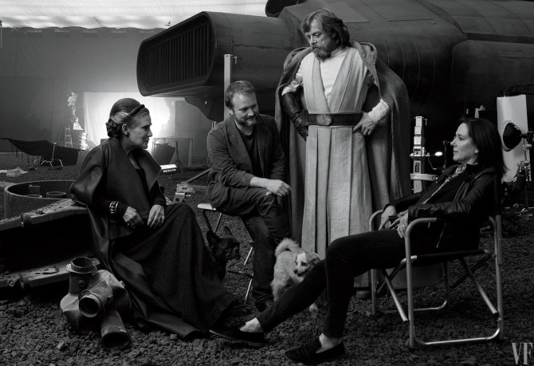
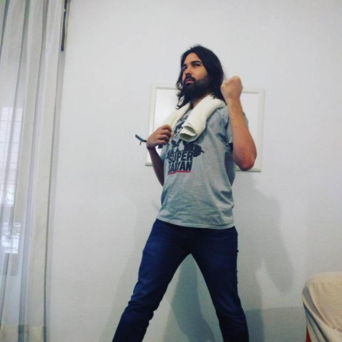
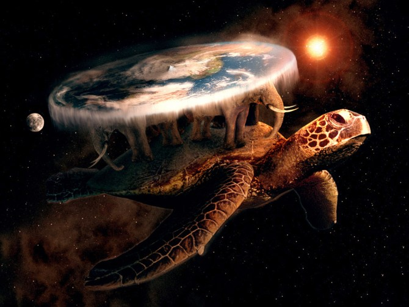

25 - 05 - 2017
Palma de Mallorca


Tres razones que explican por qué hoy es el Día del Orgullo Friki
25-05-2017 10:05 h
El 25 de mayo se celebra el Día del Orgullo Friki. Pero ¿por qué? Hay al menos tres razones que deberías conocer si de verdad tu vida gira en torno a una manifestación actual de la cultura pop.
¿Te gustan los cómics, los videojuegos, los eventos de ocio alternativo, el rol... y mil millones de cosas más? Bueno, hoy es el día perfecto para celebrarlo. Como ya sabrás, cada 25 de mayo desde 2006 se celebra el Día del Orgullo Friki. ¿Y de dónde viene este día? No, no es el día de Star Wars. Eso se suele celebrar el 4 de de este mismo mes. Os contamos tres razones por las que este día es perfecto para celebrar tus aficiones preferidas.
1 - El estreno de Star Wars
Sí, efectivamente, el 25 de mayo de 1977 se estrenó el episodio IV de la Guerra de las Galaxias, el episodio más mítico de la saga. A raíz de este hecho, en 2006, Germán Martínez, más conocido como Señor Buebo, sembró lo que a día de hoy celebramos a nivel nacional (al menos entre los frikis). Aunque la celebración comenzó en España, a día de hoy podemos encontrar manifestaciones de la misma fiesta en México o, incluso, en Estados Unidos (donde la palabra freak no tiene las mismas connotaciones pop positivas adoptadas en nuestro país). La organización a través de Internet tuvo gran aceptación entre los consumidores de material friki debido al tipo de medio que es.
La primera edición, en Madrid, se centró en la Plaza del Callao de Madrid, un lugar especialmente apropiado, según algunas fuentes, debido a que es el lugar donde se grabó una de las escenas más importantes de la película El Día de la Bestia de Álex de la Iglesia. En la plaza, un grupo de personas disfrazadas interpretaron un Pac-Man gigante para celebrar el día. Desde entonces el evento no ha hecho más que crecer. Desde 2014, Germán Martínez participa en la organización del FrikiMAD, un evento anual gratuito y benéfico con proyecciones, charlas y coloquios, que se considera el evento oficial central de las celebraciones del Orgullo Friki. Pero la fiesta, de origen puramente popular, también se celebra en toda España de diversa manera, recogiendo manifestaciones de cualquier origen reivindicado en la cultura pop: cómic, música, cine, literatura, videojuegos, juegos de mesa, u otras subculturas enmarcadas en ella.
2 - El Día de la Toalla
Además de conmemorar el estreno de Star Wars, desde 2001 se venía celebrando "El Día de la Toalla". Esta jornada conmemora el triste fallecimiento de Douglas Adams, autor, entre otras cosas de *La Guía del Autoestopista Galáctico". Esta meta-obra está compuesta por varias novelas y una película procedentes todas de la idea original que se emitió en radio en 1979. Además, la "Guía" cuenta también con un videojuego de comandos a la antigua usanza que revive por completo el genial y ácido humor de Adams. Más conocida es su "Trilogía de cinco partes", como se describían las novelas, así como la genial película, estrenada en 2005. Probablemente la aportación más importante de las obras de Adams sea el dar respuesta a "El sentido de la vida, el universo y todo lo demás", que es 42.
Adams murió de un infarto con sólo 49 años el 11 de mayo de 2001. Dos semanas después, el 25, los fans en duelo decidieron rendirle un homenaje acorde con su carácter: celebrando el Día de la Toalla. ¿Por qué? Porque como todo Autoestopista Galáctico sabe, la toalla es el elemento más importante que has de llevar siempre contigo. Así que en este día, los Frikis que conocen este hecho portan una toalla encima para rememorar el trabajo de Adams y su peculiar sentido existencial. Razón más que apropiada para que esta fecha marque la celebración del Día del Orgullo Friki.
3 - La Revolución de las Lilas
En lo más profundo de Ankh-Morpork, la ciudad más carismática (y maloliente) del Mundodisco está la Calle Mina de la Melaza. Ahora su calles están todo lo tranquilas que pueden estar 300 metros de pasillos por dos metros de ancho con 1.733 personas en su interior. Pero en su momento, estas calles fueron el escenario de la Gloriosa República Popular de la calle de la Mina de Melaza, cuyo lema fue "¡Verdad! ¡Justicia! ¡Libertad! ¡Amor a precios razonables! ¡Y un huevo duro!". El punto de partida de semejante fecha fue, efectivamente, el 25 de mayo de algún año ignoto del Disco. Y a esta revolución se la conoció como "La Revolución de las Lilas". Si sabes de qué estamos hablando, felicidades, eres un auténtico Friki.
Esto no es un modelo de la Tierra plana. Es la Gran A'tuin, que sostiene a los cuatro elefantes que mantienen al Mundodisco.
Efectivamente, esta fecha es la recogida en "Ronda de Noche", la vigésimo novena novela de la prolífica saga del Mundodisco. Esta es una de las novelas que más profundiza en la vida de la metrópolis más importante del disco. Y también una de las más queridas por el público. La muerte de Terry Pratchett en 2015 consiguió asentar aún más la fecha (ficticia) en el imaginario del Día del Orgullo Friki. Una fecha que sirve para honrar la memoria del que es uno de los autores más ácido-existencialistas-fantásticos-pero-no-tanto que ha existido y existirá jamás sobre la Tierra.
El estereotipo Friki
A diferencia de sus orígenes, el friki ya no es un paria de la sociedad. La gente ha dejado de ver a los frikis como seres extraños, ensimismados y con pocas habilidades sociales. Bueno, eso tampoco es cierto. ¡Pero ahora somos más! Desde el término freak (monstruo, rarito), al moderno friki castellano han pasado varias décadas y un torrente de cambios populares, muchas veces dirigidos e impulsados por Internet. A día de hoy ya nadie se avergüenza de ser un friki. De hecho, en ocasiones, se pierde un poco el sentido de la palabra, muchas veces solapado con el de "fan". Eventos como el Día del Orgullo Friki ayudan a integrar y hacer evolucionar la cultura popular en tiempos modernos. Una evolución que, nos guste más o menos, está produciéndose y no se parará hasta que no llegue el momento adecuado. Así que mientras tanto, salgamos a celebrarlo. Porque, "no está muerto lo que yace eternamente, que la luz del árbol de los Valar te ilumina, aunque no sea de color octarino. Pero cuidado con el amaranto, Ahtram un Rama". He dicho.
Trailer del próximo lanzamiento del universo Star Wars